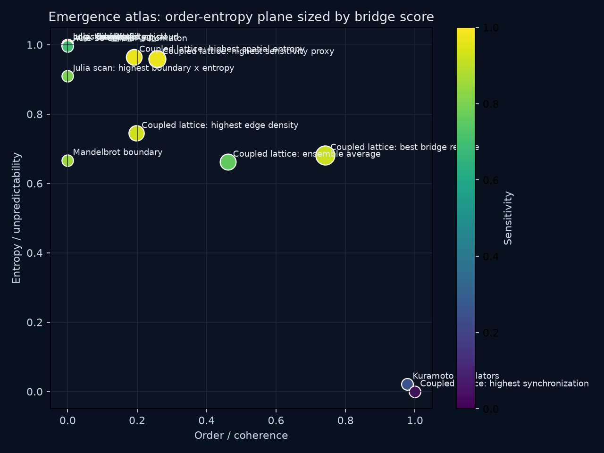

This synthesis extends the emergence atlas by placing isolated chaotic systems, fractal boundaries, synchronization, and coupled spatial chaos into one operational coordinate system.
order_vs_entropy: -0.9053sensitivity_vs_entropy: 0.8319boundary_vs_entropy: 0.5399bridge_vs_entropy: -0.0643bridge_vs_order: 0.3894
| System | Order | Entropy | Sensitivity | Boundary | Bridge | Marker | Source |
|---|---|---|---|---|---|---|---|
| Coupled lattice: best bridge regime | 0.7413 | 0.6817 | 0.9206 | 0.2389 | 0.2351 | best bridge score | coupled_lattice_exploration.json |
| Coupled lattice: highest sensitivity proxy | 0.2574 | 0.9584 | 0.9694 | 0.4983 | 0.1612 | max sensitivity score | coupled_lattice_exploration.json |
| Coupled lattice: ensemble average | 0.4610 | 0.6622 | 0.7541 | 0.2911 | 0.1241 | mean across all coupled-lattice cases | coupled_lattice_exploration.json |
| Coupled lattice: highest spatial entropy | 0.1910 | 0.9648 | 0.9659 | 0.4771 | 0.1175 | max mean spatial entropy | coupled_lattice_exploration.json |
| Coupled lattice: highest edge density | 0.1979 | 0.7450 | 0.9284 | 0.6308 | 0.1040 | max mean edge density | coupled_lattice_exploration.json |
| Kuramoto oscillators | 0.9783 | 0.0217 | 0.2500 | 0.9783 | 0.0052 | K=0.533 half-max order; K=4.000 max sampled order | complexity_atlas_synthesis.json |
| Julia: fern_leaf | 0.0000 | 1.0000 | 0.8000 | 1.0000 | 0.0000 | c=-0.727+0.189i | complexity_atlas_synthesis.json |
| Julia: basilica_like | 0.0000 | 1.0000 | 0.8000 | 1.0000 | 0.0000 | c=-0.750+0.000i | complexity_atlas_synthesis.json |
| Julia: rabbit | 0.0000 | 1.0000 | 0.8000 | 1.0000 | 0.0000 | c=-0.123+0.745i | complexity_atlas_synthesis.json |
| Julia: dragon | 0.0000 | 1.0000 | 0.8000 | 1.0000 | 0.0000 | c=-0.400+0.600i | complexity_atlas_synthesis.json |
| Julia: dendrite | 0.0000 | 1.0000 | 0.8000 | 1.0000 | 0.0000 | c=+0.000+0.750i | complexity_atlas_synthesis.json |
| Julia: connected_spiral | 0.0000 | 1.0000 | 0.8000 | 1.0000 | 0.0000 | c=-0.800+0.156i | complexity_atlas_synthesis.json |
| Julia: disconnected_cloud | 0.0000 | 1.0000 | 0.8000 | 1.0000 | 0.0000 | c=+0.350+0.350i | complexity_atlas_synthesis.json |
| Julia: near_bulb | 0.0000 | 1.0000 | 0.8000 | 1.0000 | 0.0000 | c=-0.100+0.650i | complexity_atlas_synthesis.json |
| Logistic map | 0.0000 | 1.0000 | 1.0000 | 1.0000 | 0.0000 | r=3.575 chaos onset; r=3.975 max entropy | complexity_atlas_synthesis.json |
| Rule 30 cellular automaton | 0.0000 | 0.9955 | 0.7000 | 0.9955 | 0.0000 | density=0.667 max entropy | complexity_atlas_synthesis.json |
| Mandelbrot boundary | 0.0000 | 0.6670 | 0.8500 | 0.6670 | 0.0000 | fractal boundary dimension | complexity_atlas_boundary_dimension.json |
| Julia scan: highest boundary x entropy | 0.0000 | 0.9099 | 0.8000 | 0.8145 | 0.0000 | dragon | complexity_atlas_julia_parameter_scan.json |
| Coupled lattice: highest synchronization | 0.9997 | 0.0000 | 0.0336 | 0.0000 | 0.0000 | max mean synchronization order | coupled_lattice_exploration.json |